import numpy as np
import matplotlib.pyplot as plt
import pandas as pd
%matplotlib inline
%config InlineBackend.figure_format = 'retina'Curse of Dimensionality
Curse of Dimensionality
#
n = 10
np.random.seed(42)
# Get `n` points in 1d space uniformly distributed from 0 to 1
x = np.random.uniform(0, 1, n)
plt.scatter(x, np.zeros(n), c='r', s=100)<matplotlib.collections.PathCollection at 0x7f55f7e71d60>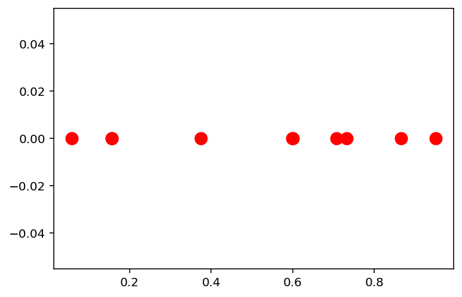
# Pick a random test point
x_test = np.random.uniform(0, 1, 1)
# Mark the nearest point and farthest point
x_nearest = x[np.argmin(np.abs(x - x_test))]
x_farthest = x[np.argmax(np.abs(x - x_test))]
plt.scatter(x, np.zeros(n), c='r', s=100)
plt.scatter(x_test, 0, c='b', s=100, marker='*', label='test')
plt.scatter(x_nearest, 0, c='g', s=100, label='nearest')
plt.scatter(x_farthest, 0, c='y', s=100, label='farthest')
plt.legend()
ratio = np.abs(x_test - x_nearest) / np.abs(x_test - x_farthest)
print('Ratio of distances: {}'.format(ratio))Ratio of distances: [0.040316]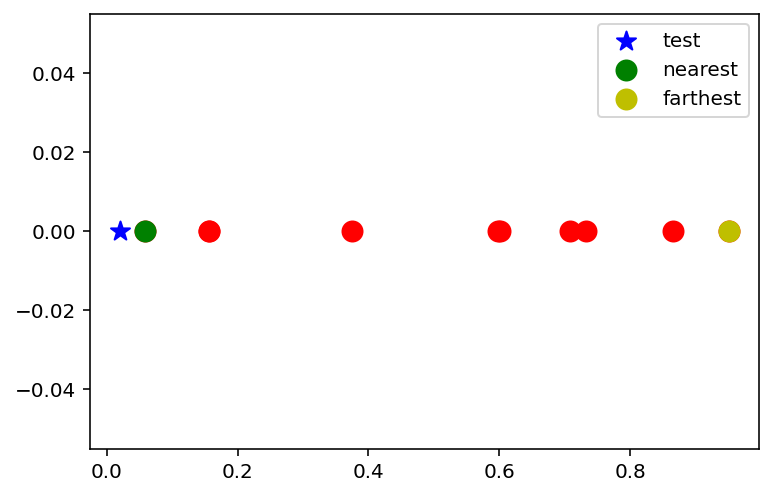
# Do the above experiment for 1000 times
n = 10
np.random.seed(42)
n_exp = 1000
ratios = np.zeros(n_exp)
for i in range(n_exp):
x = np.random.uniform(0, 1, n)
x_test = np.random.uniform(0, 1, 1)
x_nearest = x[np.argmin(np.abs(x - x_test))]
x_farthest = x[np.argmax(np.abs(x - x_test))]
ratios[i] = np.abs(x_test - x_nearest) / np.abs(x_test - x_farthest)import seaborn as sns
sns.displot(ratios, kde=False, bins=20)<seaborn.axisgrid.FacetGrid at 0x7f55f5dc6a90>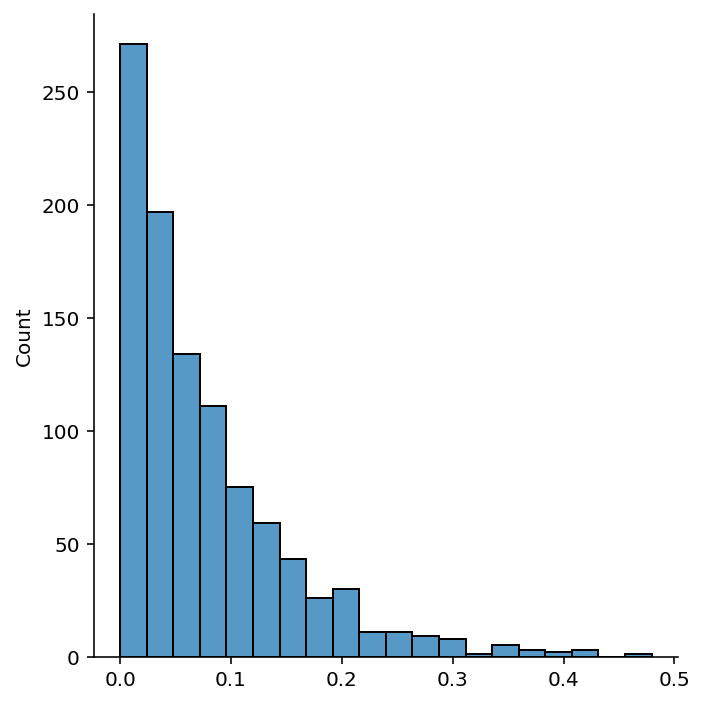
# Repeat the experiment in 2d
n = 10
np.random.seed(42)
x = np.random.uniform(0, 1, (n, 2))
plt.scatter(x[:, 0], x[:, 1], c='r', s=100)<matplotlib.collections.PathCollection at 0x7f53d91c9a60>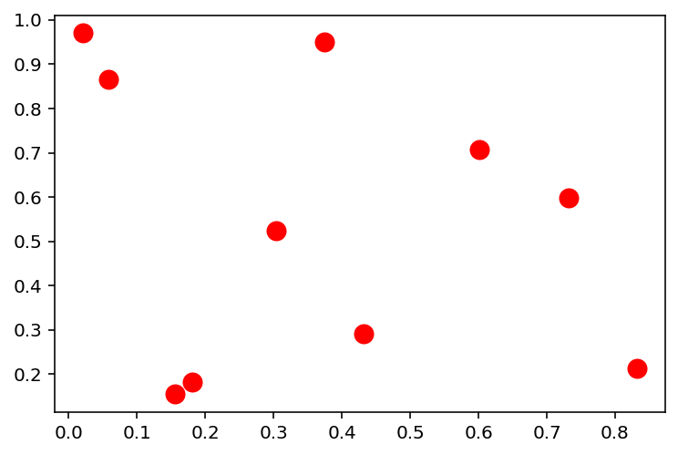
# Pick a random test point
x_test = np.random.uniform(0, 1, 2)
# Mark the nearest point and farthest point
x_nearest = x[np.argmin(np.linalg.norm(x - x_test, axis=1))]
x_farthest = x[np.argmax(np.linalg.norm(x - x_test, axis=1))]
plt.scatter(x[:, 0], x[:, 1], c='r', s=100)
plt.scatter(x_test[0], x_test[1], c='b', s=100, marker='*', label='test')
plt.scatter(x_nearest[0], x_nearest[1], c='g', s=100, label='nearest')
plt.scatter(x_farthest[0], x_farthest[1], c='y', s=100, label='farthest')
plt.legend()<matplotlib.legend.Legend at 0x7f53d91456a0>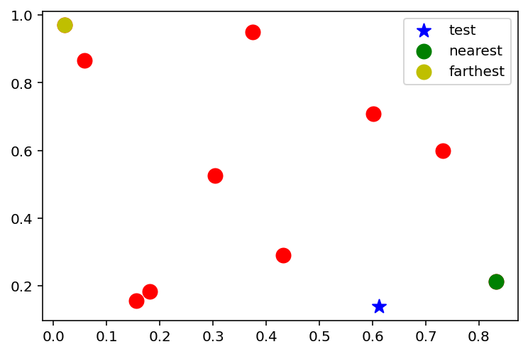
# Find the ratio of distances between the nearest and farthest points in 1000 experiments
n = 10
np.random.seed(42)
ratios_2d = np.zeros(n_exp)
for i in range(n_exp):
x = np.random.uniform(0, 1, (n, 2))
x_test = np.random.uniform(0, 1, 2)
x_nearest = x[np.argmin(np.linalg.norm(x - x_test, axis=1))]
x_farthest = x[np.argmax(np.linalg.norm(x - x_test, axis=1))]
ratios_2d[i] = np.linalg.norm(x_test - x_nearest) / np.linalg.norm(x_test - x_farthest)sns.displot(ratios_2d, kde=False, bins=20)<seaborn.axisgrid.FacetGrid at 0x7f53d9094970>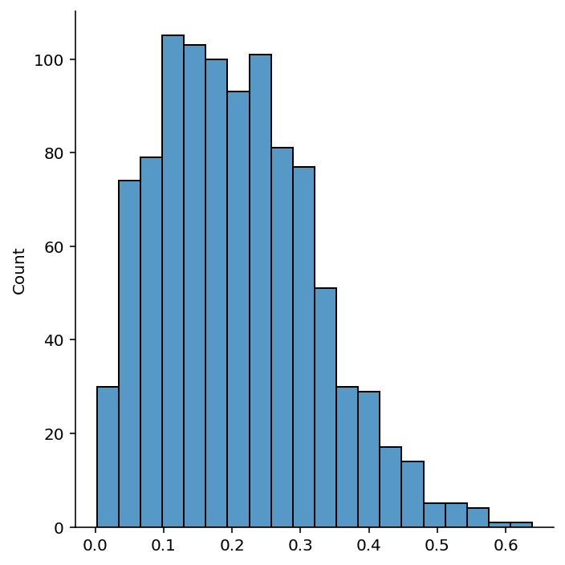
# Now, let's do the same experiment in dimensions varying from 1 to 20
n = 10
np.random.seed(42)
n_dim = 40
ratios_nd = np.zeros((n_exp, n_dim))
for i in range(n_exp):
for d in range(1, n_dim + 1):
x = np.random.uniform(0, 1, (n, d))
x_test = np.random.uniform(0, 1, d)
x_nearest = x[np.argmin(np.linalg.norm(x - x_test, axis=1))]
x_farthest = x[np.argmax(np.linalg.norm(x - x_test, axis=1))]
ratios_nd[i, d - 1] = np.linalg.norm(x_test - x_nearest) / np.linalg.norm(x_test - x_farthest)# Plot the ratio of distances between the nearest and farthest points in 1000 experiments for each dimension
plt.figure(figsize=(10, 6))
plt.plot(np.arange(1, n_dim + 1), np.mean(ratios_nd, axis=0), 'o-')
plt.xlabel('Dimension')
plt.ylabel('Ratio of distances')
plt.title('Ratio of distances between the nearest and farthest points in 1000 experiments for each dimension')
plt.ylim(0, 1.)(0.0, 1.0)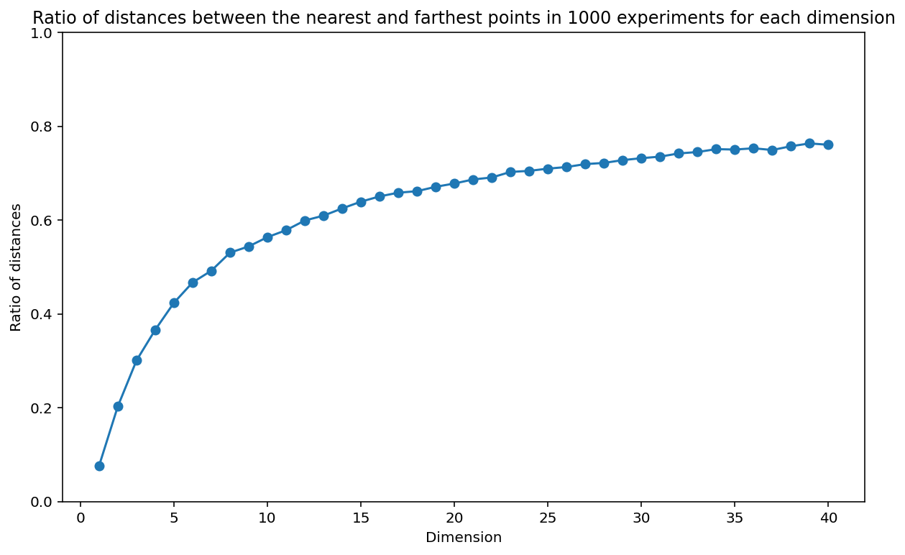
# Let us now see what happens if we have more points in higher dimensions
# 1d space: 10 points
n = 10
np.random.seed(42)
n_dim = 4
ratios_nd_more_points = np.zeros((n_exp, n_dim))
num_points = [10, 50, 200, 2000]
for i in range(n_exp):
for d in range(1, n_dim + 1):
x = np.random.uniform(0, 1, (num_points[d-1], d))
x_test = np.random.uniform(0, 1, d)
x_nearest = x[np.argmin(np.linalg.norm(x - x_test, axis=1))]
x_farthest = x[np.argmax(np.linalg.norm(x - x_test, axis=1))]
ratios_nd_more_points[i, d - 1] = np.linalg.norm(x_test - x_nearest) / np.linalg.norm(x_test - x_farthest)# Plot the ratio of distances between the nearest and farthest points in 1000 experiments for each dimension
plt.figure(figsize=(10, 6))
plt.plot(np.arange(1, n_dim + 1), np.mean(ratios_nd_more_points, axis=0), 'o-')
plt.xlabel('Dimension')
plt.ylabel('Ratio of distances')
plt.title('Ratio of distances between the nearest and farthest points in 1000 experiments for each dimension')
plt.ylim(0, 1)(0.0, 1.0)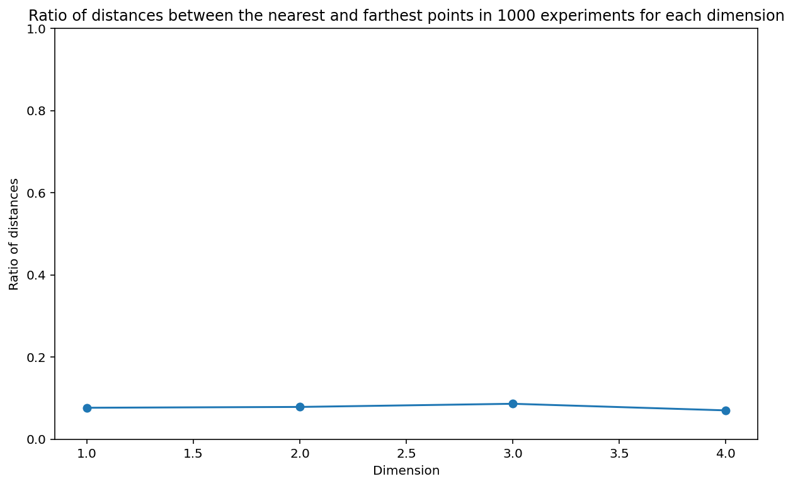
# Now showing how linear regression is affected by curse of dimensionality
n_points = 20
x = np.random.uniform(0, 1, (n_points, 1))
# sort the x values
x = np.sort(x, axis=0)
y = 4 * x + 3 + np.random.normal(0, 0.5, (n_points, 1))
plt.scatter(x, y)<matplotlib.collections.PathCollection at 0x7f53d8f5feb0>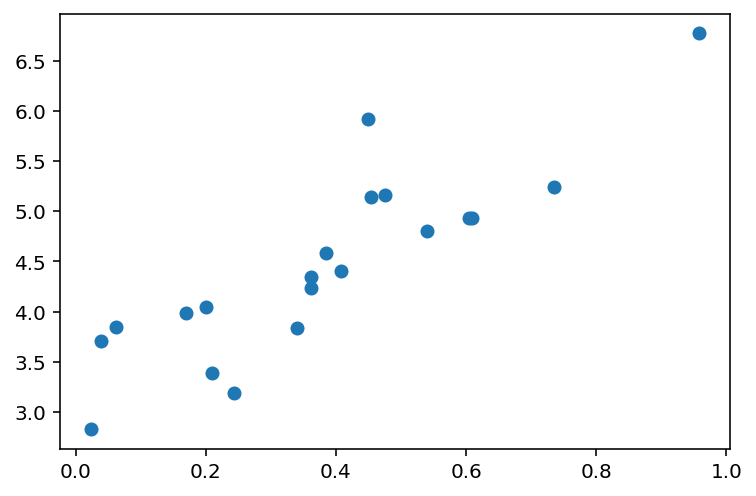
# Let us fit a linear regression model of degree d
from sklearn.linear_model import LinearRegression
from sklearn.preprocessing import PolynomialFeatures
def fit_linear_regression(x, y, d):
poly = PolynomialFeatures(degree=d)
x = poly.fit_transform(x)
model = LinearRegression()
model.fit(x, y)
return model
def plot_linear_regression(x, y, d):
model = fit_linear_regression(x, y, d)
y_pred = model.predict(PolynomialFeatures(degree=d).fit_transform(x))
plt.scatter(x, y)
plt.plot(x, y_pred, c='r')
plt.show()plot_linear_regression(x, y, 1)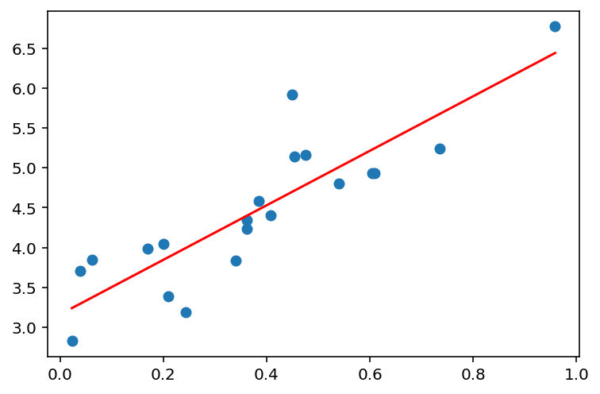
plot_linear_regression(x, y, 5)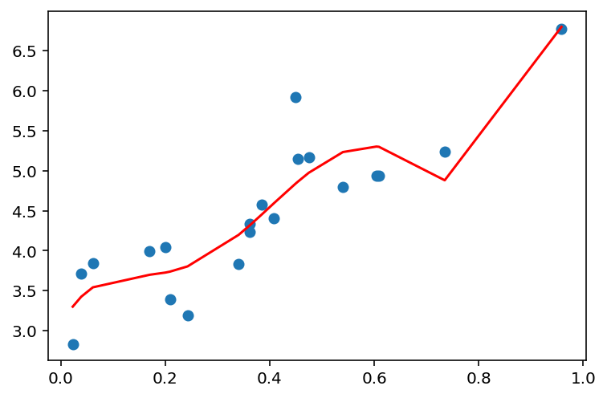
plot_linear_regression(x, y, 10)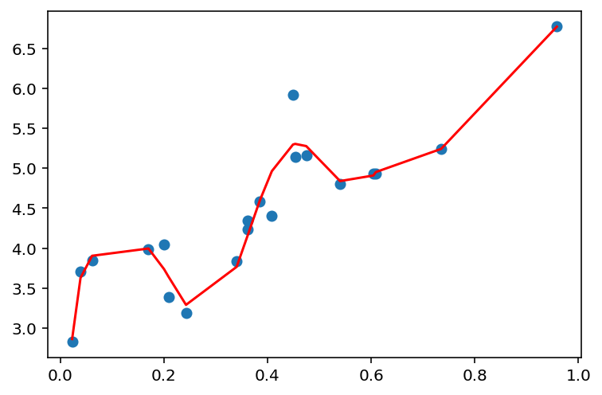
plot_linear_regression(x, y, 15)
# Now, we see that if we increase the number of points, the model will fit better
n_points = 1000
x = np.random.uniform(0, 1, (n_points, 1))
# sort the x values
x = np.sort(x, axis=0)
y = 4 * x + 3 + np.random.normal(0, 0.5, (n_points, 1))
plot_linear_regression(x, y, 1)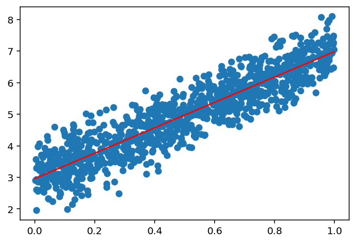
plot_linear_regression(x, y, 5)plot_linear_regression(x, y, 25)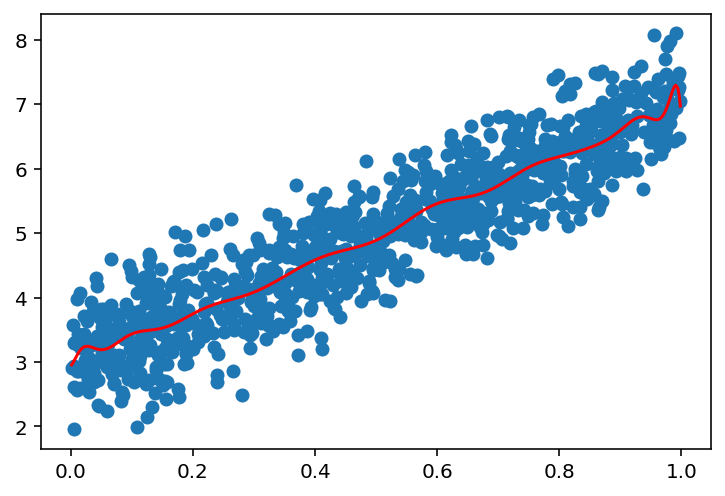